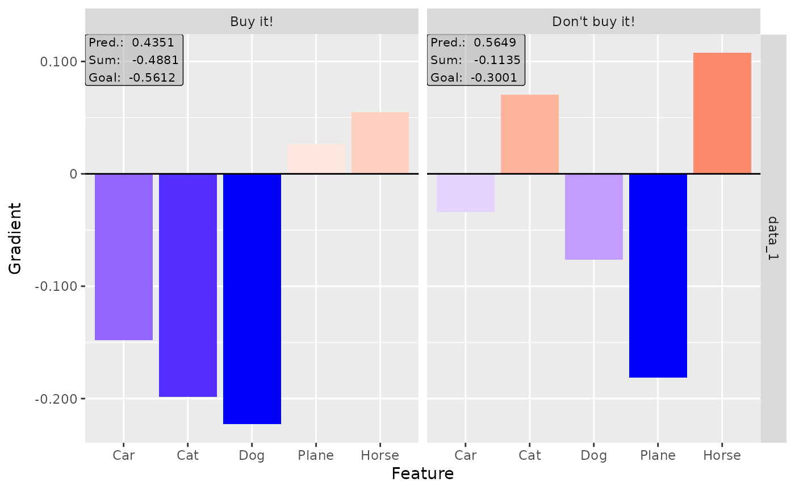
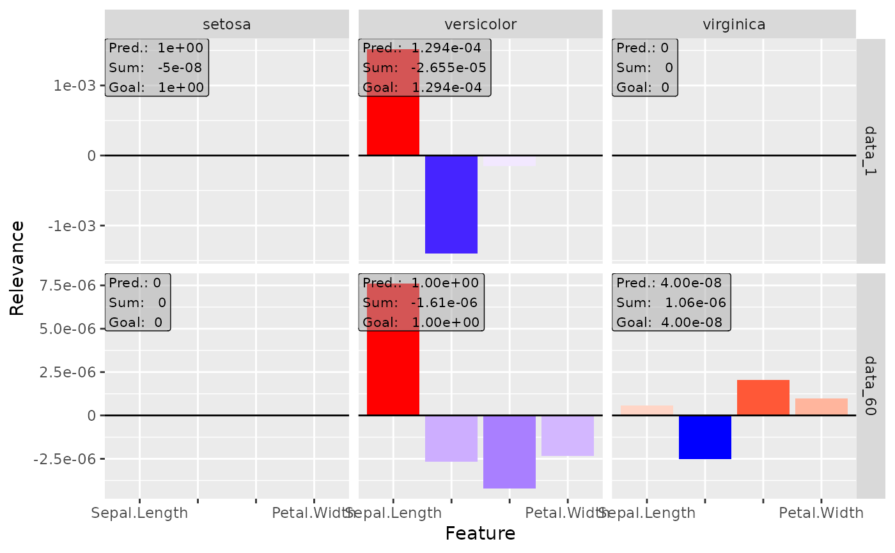
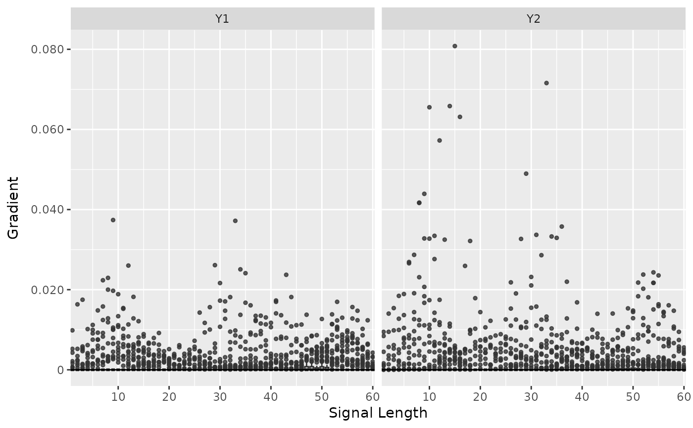

This method computes the gradients (also known as 'Vanilla Gradients') of
the outputs with respect to the input variables, i.e. for all input
variable \(i\) and output class \(j\)
$$d f(x)_j / d x_i.$$
If the argument times_input is TRUE, the gradients are multiplied by
the respective input value ('Gradient x Input'), i.e.
$$x_i * d f(x)_j / d x_i.$$
Super classes
innsight::InterpretingMethod -> innsight::GradientBased -> Gradient
Methods
Public methods
Method new()
Create a new instance of the Vamilla Gradient method.
Usage
Gradient$new( converter, data, channels_first = TRUE, output_idx = NULL, ignore_last_act = TRUE, times_input = FALSE, dtype = "float" )
Arguments
converterAn instance of the R6 class
Converter.dataThe data for which the gradients are to be calculated. It has to be an array or array-like format of size (batch_size, dim_in).
channels_firstThe format of the given data, i.e. channels on last dimension (
FALSE) or after the batch dimension (TRUE). If the data has no channels, use the default valueTRUE.output_idxThis vector determines for which outputs the method will be applied. By default (
NULL), all outputs (but limited to the first 10) are considered.ignore_last_actA boolean value to include the last activation into all the calculations, or not (default:
TRUE). In some cases, the last activation leads to a saturation problem.times_inputMultiplies the gradients with the input features. This method is called 'Gradient x Input'. Default:
FALSE.dtypeThe data type for the calculations. Use either
'float'for torch::torch_float or'double'for torch::torch_double.
Method clone()
The objects of this class are cloneable with this method.
Usage
Gradient$clone(deep = FALSE)
Arguments
deepWhether to make a deep clone.
Examples
#----------------------- Example 1: Torch ---------------------------------- library(torch) # Create nn_sequential model and data model <- nn_sequential( nn_linear(5, 12), nn_relu(), nn_linear(12, 2), nn_softmax(dim = 2) ) data <- torch_randn(25, 5) # Create Converter with input and output names converter <- Converter$new(model, input_dim = c(5), input_names = list(c("Car", "Cat", "Dog", "Plane", "Horse")), output_names = list(c("Buy it!", "Don't buy it!")) ) # Calculate the Gradients grad <- Gradient$new(converter, data) #> Backwardpass 'Gradient': #> | | | 0% | |=================================== | 50% | |======================================================================| 100% # Print the result as a data.frame grad$get_result("data.frame") #> data feature class value #> 1 data_1 Car Buy it! -0.0352651849 #> 2 data_2 Car Buy it! -0.0403623134 #> 3 data_3 Car Buy it! 0.0148059018 #> 4 data_4 Car Buy it! -0.0299034808 #> 5 data_5 Car Buy it! -0.0381411910 #> 6 data_6 Car Buy it! -0.0965808034 #> 7 data_7 Car Buy it! -0.0103476420 #> 8 data_8 Car Buy it! 0.0343381464 #> 9 data_9 Car Buy it! -0.0203014314 #> 10 data_10 Car Buy it! -0.0021331478 #> 11 data_11 Car Buy it! -0.1743081808 #> 12 data_12 Car Buy it! -0.0019409303 #> 13 data_13 Car Buy it! -0.0751705840 #> 14 data_14 Car Buy it! 0.0253359117 #> 15 data_15 Car Buy it! -0.1581568718 #> 16 data_16 Car Buy it! -0.1337197274 #> 17 data_17 Car Buy it! -0.1382174641 #> 18 data_18 Car Buy it! -0.0168136600 #> 19 data_19 Car Buy it! -0.0021331478 #> 20 data_20 Car Buy it! -0.0019409303 #> 21 data_21 Car Buy it! 0.0143957734 #> 22 data_22 Car Buy it! -0.0019409303 #> 23 data_23 Car Buy it! -0.0969909430 #> 24 data_24 Car Buy it! 0.0647629425 #> 25 data_25 Car Buy it! -0.0473770276 #> 26 data_1 Cat Buy it! 0.0531817041 #> 27 data_2 Cat Buy it! 0.0530599356 #> 28 data_3 Cat Buy it! 0.0773786157 #> 29 data_4 Cat Buy it! 0.0400924794 #> 30 data_5 Cat Buy it! 0.0498193391 #> 31 data_6 Cat Buy it! 0.0987714753 #> 32 data_7 Cat Buy it! 0.1401752681 #> 33 data_8 Cat Buy it! -0.0189390387 #> 34 data_9 Cat Buy it! 0.0413207784 #> 35 data_10 Cat Buy it! 0.0694054812 #> 36 data_11 Cat Buy it! 0.0784545690 #> 37 data_12 Cat Buy it! 0.0057267435 #> 38 data_13 Cat Buy it! -0.0260615665 #> 39 data_14 Cat Buy it! 0.0005860645 #> 40 data_15 Cat Buy it! 0.0351830199 #> 41 data_16 Cat Buy it! 0.0026658662 #> 42 data_17 Cat Buy it! 0.0141372643 #> 43 data_18 Cat Buy it! 0.0088897385 #> 44 data_19 Cat Buy it! 0.0694054812 #> 45 data_20 Cat Buy it! 0.0057267435 #> 46 data_21 Cat Buy it! 0.0771723837 #> 47 data_22 Cat Buy it! 0.0057267435 #> 48 data_23 Cat Buy it! 0.0985652432 #> 49 data_24 Cat Buy it! 0.0683825240 #> 50 data_25 Cat Buy it! 0.0642943680 #> 51 data_1 Dog Buy it! 0.1463269591 #> 52 data_2 Dog Buy it! 0.1749210209 #> 53 data_3 Dog Buy it! -0.0089139706 #> 54 data_4 Dog Buy it! 0.1344960183 #> 55 data_5 Dog Buy it! 0.1986656338 #> 56 data_6 Dog Buy it! 0.0311856046 #> 57 data_7 Dog Buy it! 0.0258891080 #> 58 data_8 Dog Buy it! 0.0882472694 #> 59 data_9 Dog Buy it! 0.0583847314 #> 60 data_10 Dog Buy it! 0.0905137211 #> 61 data_11 Dog Buy it! 0.1266745776 #> 62 data_12 Dog Buy it! 0.1226732284 #> 63 data_13 Dog Buy it! 0.0764085054 #> 64 data_14 Dog Buy it! -0.0132824481 #> 65 data_15 Dog Buy it! -0.0096581960 #> 66 data_16 Dog Buy it! 0.0267494731 #> 67 data_17 Dog Buy it! 0.1685031652 #> 68 data_18 Dog Buy it! 0.0939080417 #> 69 data_19 Dog Buy it! 0.0905137211 #> 70 data_20 Dog Buy it! 0.1226732284 #> 71 data_21 Dog Buy it! -0.0092779631 #> 72 data_22 Dog Buy it! 0.1226732284 #> 73 data_23 Dog Buy it! 0.0308216140 #> 74 data_24 Dog Buy it! -0.0604206547 #> 75 data_25 Dog Buy it! -0.0963680372 #> 76 data_1 Plane Buy it! -0.1155784801 #> 77 data_2 Plane Buy it! 0.0140249543 #> 78 data_3 Plane Buy it! -0.1528715491 #> 79 data_4 Plane Buy it! -0.0408980995 #> 80 data_5 Plane Buy it! -0.1675016582 #> 81 data_6 Plane Buy it! -0.2426942289 #> 82 data_7 Plane Buy it! -0.0604450591 #> 83 data_8 Plane Buy it! -0.0746228546 #> 84 data_9 Plane Buy it! -0.1494874656 #> 85 data_10 Plane Buy it! -0.1625447422 #> 86 data_11 Plane Buy it! -0.1249120384 #> 87 data_12 Plane Buy it! -0.2288307548 #> 88 data_13 Plane Buy it! -0.1986285746 #> 89 data_14 Plane Buy it! -0.0469782352 #> 90 data_15 Plane Buy it! -0.1896939278 #> 91 data_16 Plane Buy it! -0.1747626364 #> 92 data_17 Plane Buy it! -0.0871826485 #> 93 data_18 Plane Buy it! -0.1562084854 #> 94 data_19 Plane Buy it! -0.1625447422 #> 95 data_20 Plane Buy it! -0.2288307548 #> 96 data_21 Plane Buy it! -0.1529573500 #> 97 data_22 Plane Buy it! -0.2288307548 #> 98 data_23 Plane Buy it! -0.2427800000 #> 99 data_24 Plane Buy it! -0.1490070820 #> 100 data_25 Plane Buy it! -0.0915719569 #> 101 data_1 Horse Buy it! 0.1111178175 #> 102 data_2 Horse Buy it! 0.0197571740 #> 103 data_3 Horse Buy it! 0.0316436142 #> 104 data_4 Horse Buy it! 0.0243422743 #> 105 data_5 Horse Buy it! 0.1058764532 #> 106 data_6 Horse Buy it! 0.1123695076 #> 107 data_7 Horse Buy it! -0.0254873000 #> 108 data_8 Horse Buy it! 0.0178501308 #> 109 data_9 Horse Buy it! 0.0796595067 #> 110 data_10 Horse Buy it! 0.0863312259 #> 111 data_11 Horse Buy it! 0.1089126319 #> 112 data_12 Horse Buy it! 0.1346005797 #> 113 data_13 Horse Buy it! 0.1363034099 #> 114 data_14 Horse Buy it! -0.0327522792 #> 115 data_15 Horse Buy it! 0.1154411435 #> 116 data_16 Horse Buy it! 0.1447389573 #> 117 data_17 Horse Buy it! 0.1395792663 #> 118 data_18 Horse Buy it! 0.0795985088 #> 119 data_19 Horse Buy it! 0.0863312259 #> 120 data_20 Horse Buy it! 0.1346005797 #> 121 data_21 Horse Buy it! 0.0311377421 #> 122 data_22 Horse Buy it! 0.1346005797 #> 123 data_23 Horse Buy it! 0.1118636280 #> 124 data_24 Horse Buy it! -0.0268884692 #> 125 data_25 Horse Buy it! 0.0049396399 #> 126 data_1 Car Don't buy it! 0.1143299416 #> 127 data_2 Car Don't buy it! 0.0715248957 #> 128 data_3 Car Don't buy it! 0.0149059817 #> 129 data_4 Car Don't buy it! 0.0311985780 #> 130 data_5 Car Don't buy it! 0.2637245655 #> 131 data_6 Car Don't buy it! 0.1821125299 #> 132 data_7 Car Don't buy it! -0.0975393802 #> 133 data_8 Car Don't buy it! 0.1829911470 #> 134 data_9 Car Don't buy it! 0.2352169156 #> 135 data_10 Car Don't buy it! 0.0856337398 #> 136 data_11 Car Don't buy it! 0.1262846440 #> 137 data_12 Car Don't buy it! 0.2857605219 #> 138 data_13 Car Don't buy it! 0.2485143095 #> 139 data_14 Car Don't buy it! 0.0840646923 #> 140 data_15 Car Don't buy it! 0.1398035437 #> 141 data_16 Car Don't buy it! 0.1505669653 #> 142 data_17 Car Don't buy it! 0.1319852769 #> 143 data_18 Car Don't buy it! 0.1463348866 #> 144 data_19 Car Don't buy it! 0.0856337398 #> 145 data_20 Car Don't buy it! 0.2857605219 #> 146 data_21 Car Don't buy it! 0.0125341415 #> 147 data_22 Car Don't buy it! 0.2857605219 #> 148 data_23 Car Don't buy it! 0.1797406822 #> 149 data_24 Car Don't buy it! 0.0162987188 #> 150 data_25 Car Don't buy it! -0.1127496138 #> 151 data_1 Cat Don't buy it! 0.1465799659 #> 152 data_2 Cat Don't buy it! -0.0574866384 #> 153 data_3 Cat Don't buy it! 0.0561003461 #> 154 data_4 Cat Don't buy it! 0.0058695013 #> 155 data_5 Cat Don't buy it! 0.0461871959 #> 156 data_6 Cat Don't buy it! 0.0679123402 #> 157 data_7 Cat Don't buy it! 0.1463195384 #> 158 data_8 Cat Don't buy it! -0.1491492838 #> 159 data_9 Cat Don't buy it! 0.0253097415 #> 160 data_10 Cat Don't buy it! 0.0062077222 #> 161 data_11 Cat Don't buy it! 0.0678249225 #> 162 data_12 Cat Don't buy it! 0.0193469785 #> 163 data_13 Cat Don't buy it! -0.0381600223 #> 164 data_14 Cat Don't buy it! -0.1025343984 #> 165 data_15 Cat Don't buy it! 0.0242206231 #> 166 data_16 Cat Don't buy it! 0.0098983301 #> 167 data_17 Cat Don't buy it! 0.0673179105 #> 168 data_18 Cat Don't buy it! -0.0993576348 #> 169 data_19 Cat Don't buy it! 0.0062077222 #> 170 data_20 Cat Don't buy it! 0.0193469785 #> 171 data_21 Cat Don't buy it! 0.0549076796 #> 172 data_22 Cat Don't buy it! 0.0193469785 #> 173 data_23 Cat Don't buy it! 0.0667196810 #> 174 data_24 Cat Don't buy it! 0.0558495447 #> 175 data_25 Cat Don't buy it! 0.0619723164 #> 176 data_1 Dog Don't buy it! 0.2769024074 #> 177 data_2 Dog Don't buy it! 0.1564309746 #> 178 data_3 Dog Don't buy it! 0.0760813802 #> 179 data_4 Dog Don't buy it! 0.1254304796 #> 180 data_5 Dog Don't buy it! 0.1607597470 #> 181 data_6 Dog Don't buy it! 0.0177454967 #> 182 data_7 Dog Don't buy it! 0.1436099559 #> 183 data_8 Dog Don't buy it! 0.0853614360 #> 184 data_9 Dog Don't buy it! 0.0355792791 #> 185 data_10 Dog Don't buy it! 0.0007857028 #> 186 data_11 Dog Don't buy it! 0.1438262314 #> 187 data_12 Dog Don't buy it! 0.1145013198 #> 188 data_13 Dog Don't buy it! 0.0887925699 #> 189 data_14 Dog Don't buy it! -0.0012545530 #> 190 data_15 Dog Don't buy it! -0.0103183314 #> 191 data_16 Dog Don't buy it! 0.0057175513 #> 192 data_17 Dog Don't buy it! 0.1575070471 #> 193 data_18 Dog Don't buy it! 0.0581519529 #> 194 data_19 Dog Don't buy it! 0.0007857028 #> 195 data_20 Dog Don't buy it! 0.1145013198 #> 196 data_21 Dog Don't buy it! 0.0739763454 #> 197 data_22 Dog Don't buy it! 0.1145013198 #> 198 data_23 Dog Don't buy it! 0.0156404618 #> 199 data_24 Dog Don't buy it! 0.0746454373 #> 200 data_25 Dog Don't buy it! 0.0716427714 #> 201 data_1 Plane Don't buy it! -0.0614104643 #> 202 data_2 Plane Don't buy it! 0.0308074057 #> 203 data_3 Plane Don't buy it! -0.2031263113 #> 204 data_4 Plane Don't buy it! -0.0635031611 #> 205 data_5 Plane Don't buy it! -0.0892098695 #> 206 data_6 Plane Don't buy it! -0.0832889378 #> 207 data_7 Plane Don't buy it! -0.1027248502 #> 208 data_8 Plane Don't buy it! -0.0699824542 #> 209 data_9 Plane Don't buy it! -0.0162984021 #> 210 data_10 Plane Don't buy it! -0.1608918011 #> 211 data_11 Plane Don't buy it! 0.0139919743 #> 212 data_12 Plane Don't buy it! -0.1265423447 #> 213 data_13 Plane Don't buy it! -0.0802213401 #> 214 data_14 Plane Don't buy it! -0.0304453187 #> 215 data_15 Plane Don't buy it! -0.0468723550 #> 216 data_16 Plane Don't buy it! -0.0402958170 #> 217 data_17 Plane Don't buy it! 0.0106640812 #> 218 data_18 Plane Don't buy it! -0.1544963121 #> 219 data_19 Plane Don't buy it! -0.1608918011 #> 220 data_20 Plane Don't buy it! -0.1265423447 #> 221 data_21 Plane Don't buy it! -0.2036224306 #> 222 data_22 Plane Don't buy it! -0.1265423447 #> 223 data_23 Plane Don't buy it! -0.0837850571 #> 224 data_24 Plane Don't buy it! -0.2030185759 #> 225 data_25 Plane Don't buy it! -0.0937363207 #> 226 data_1 Horse Don't buy it! -0.0583660342 #> 227 data_2 Horse Don't buy it! -0.0311745256 #> 228 data_3 Horse Don't buy it! -0.0115382522 #> 229 data_4 Horse Don't buy it! 0.0046034371 #> 230 data_5 Horse Don't buy it! -0.1663138121 #> 231 data_6 Horse Don't buy it! -0.1470265090 #> 232 data_7 Horse Don't buy it! 0.0375710316 #> 233 data_8 Horse Don't buy it! -0.0848411545 #> 234 data_9 Horse Don't buy it! -0.1732481122 #> 235 data_10 Horse Don't buy it! -0.0354300253 #> 236 data_11 Horse Don't buy it! -0.1053612456 #> 237 data_12 Horse Don't buy it! -0.1488287598 #> 238 data_13 Horse Don't buy it! -0.1461235583 #> 239 data_14 Horse Don't buy it! -0.0752866045 #> 240 data_15 Horse Don't buy it! -0.1449159831 #> 241 data_16 Horse Don't buy it! -0.1320116669 #> 242 data_17 Horse Don't buy it! -0.0930515975 #> 243 data_18 Horse Don't buy it! -0.0468367264 #> 244 data_19 Horse Don't buy it! -0.0354300253 #> 245 data_20 Horse Don't buy it! -0.1488287598 #> 246 data_21 Horse Don't buy it! -0.0144637972 #> 247 data_22 Horse Don't buy it! -0.1488287598 #> 248 data_23 Horse Don't buy it! -0.1499520540 #> 249 data_24 Horse Don't buy it! -0.0131700560 #> 250 data_25 Horse Don't buy it! 0.0577612817 # Plot the result for both classes plot(grad, output_idx = 1:2)  # Plot the boxplot of all datapoints boxplot(grad, output_idx = 1:2)# ------------------------- Example 2: Neuralnet --------------------------- library(neuralnet) data(iris) # Train a neural network nn <- neuralnet(Species ~ ., iris, linear.output = FALSE, hidden = c(10, 5), act.fct = "logistic", rep = 1 ) # Convert the trained model converter <- Converter$new(nn) # Calculate the gradients gradient <- Gradient$new(converter, iris[, -5], times_input = TRUE) #> Backwardpass 'Gradient': #> | | | 0% | |======================= | 33% | |=============================================== | 67% | |======================================================================| 100% # Plot the result for the first and 60th data point and all classes plot(gradient, data_idx = c(1, 60), output_idx = 1:3)  # Calculate Gradients x Input and do not ignore the last activation gradient <- Gradient$new(converter, iris[, -5], ignore_last_act = FALSE) #> Backwardpass 'Gradient': #> | | | 0% | |======================= | 33% | |=============================================== | 67% | |======================================================================| 100% # Plot the result again plot(gradient, data_idx = c(1, 60), output_idx = 1:3)  # ------------------------- Example 3: Keras ------------------------------- library(keras) if (is_keras_available()) { data <- array(rnorm(64 * 60 * 3), dim = c(64, 60, 3)) model <- keras_model_sequential() model %>% layer_conv_1d( input_shape = c(60, 3), kernel_size = 8, filters = 8, activation = "softplus", padding = "valid" ) %>% layer_conv_1d( kernel_size = 8, filters = 4, activation = "tanh", padding = "same" ) %>% layer_conv_1d( kernel_size = 4, filters = 2, activation = "relu", padding = "valid" ) %>% layer_flatten() %>% layer_dense(units = 64, activation = "relu") %>% layer_dense(units = 16, activation = "relu") %>% layer_dense(units = 3, activation = "softmax") # Convert the model converter <- Converter$new(model) # Apply the Gradient method gradient <- Gradient$new(converter, data, channels_first = FALSE) # Plot the result for the first datapoint and all classes plot(gradient, output_idx = 1:3) # Plot the result as boxplots for first two classes boxplot(gradient, output_idx = 1:2) # You can also create an interactive plot with plotly. # This is a suggested package, so make sure that it is installed library(plotly) # Result as boxplots boxplot(gradient, as_plotly = TRUE) # Result of the second data point plot(gradient, data_idx = 2, as_plotly = TRUE) } #> Backwardpass 'Gradient': #> | | | 0% | |======================= | 33% | |=============================================== | 67% | |======================================================================| 100% # ------------------------- Advanced: Plotly ------------------------------- # If you want to create an interactive plot of your results with custom # changes, you can take use of the method plotly::ggplotly library(ggplot2) library(plotly) library(neuralnet) data(iris) nn <- neuralnet(Species ~ ., iris, linear.output = FALSE, hidden = c(10, 8), act.fct = "tanh", rep = 1, threshold = 0.5 ) # create an converter for this model converter <- Converter$new(nn) # create new instance of 'Gradient' gradient <- Gradient$new(converter, iris[, -5]) #> Backwardpass 'Gradient': #> | | | 0% | |======================= | 33% | |=============================================== | 67% | |======================================================================| 100% library(plotly) # Get the ggplot and add your changes p <- plot(gradient, output_idx = 1, data_idx = 1:2) + theme_bw() + scale_fill_gradient2(low = "green", mid = "black", high = "blue") #> Scale for 'fill' is already present. Adding another scale for 'fill', which #> will replace the existing scale. # Now apply the method plotly::ggplotly with argument tooltip = "text" plotly::ggplotly(p, tooltip = "text")